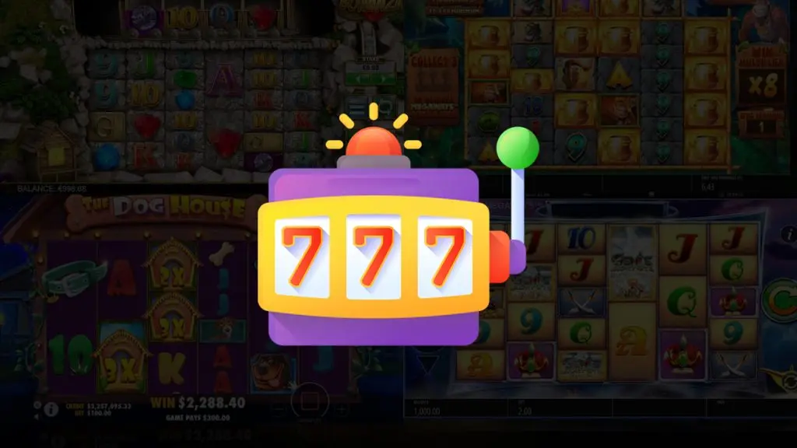

Spielautomaten Strategien, die jeder Spieler kennen sollte
Das Spielen von Spielautomaten ist eine der beliebtesten Aktivitäten in fast jedem Casino, egal ob es sich um ein physisches oder ein Online-Casino handelt. Beim Spielen von Slots ist es im Gegensatz zu vielen anderen Casinospielen nicht möglich, effektive Spielautomaten Strategien anzuwenden. Das Spielen an einem Spielautomaten ist daher hauptsächlich eine Form der Unterhaltung, bei der Sie jedoch sicherlich riesige Gewinne erzielen können, solange Sie das Glück auf Ihrer Seite haben.
Da es jedoch keine Spielautomaten Strategien für eine effektiv bessere Präsentation beim Spielen an einem Spielautomaten gibt, gibt es eine Reihe von Dingen, die berücksichtigt werden können. Wenn es richtig gemacht wird, wird Ihnen dies sicherlich viel Geld sparen. Sie brauchen keine Fähigkeiten, um einen Spielautomaten zu spielen, aber mit etwas zusätzlichem Wissen können Sie Geld, das Sie beim Spielen ausgeben, zumindest etwas länger und verantwortungsvoller genießen. In diesem Artikel können Sie alles lesen, was Sie wissen müssen, um länger an einem Spielautomaten zu spielen und weniger Verluste zu machen.
Zurück zum Spieler
Wenn Sie anfangen, an einem Spielautomaten zu spielen und wollen Sie Spielautomaten Strategien benutzen, ist es natürlich nützlich zu wissen, wie groß die Chance ist, dass Sie tatsächlich etwas an dem Spielautomaten gewinnen können. Allerdings lässt sich nicht viel mit Sicherheit sagen. Es gibt jedoch eine Möglichkeit, einen Hinweis auf Ihre Chancen zu erhalten, nämlich den Return To Player-Prozentsatz (RTP) des Spielautomaten. Dieser Prozentsatz gibt an, wie viel von den Einnahmen des Spielautomaten in Form von Gewinnkombinationen an die Spieler zurückgezahlt wird.
Der Return To Player Prozentsatz auf einem Spielautomaten, den Sie in einem physischen Casino finden, ist normalerweise ziemlich niedrig, etwa 70 %. Das bedeutet, dass 30 % der Einnahmen am Spielautomaten an die Spieler ausgezahlt werden. Bei Online-Casinos sind die RTP-Prozentsätze oft viel höher, zwischen 92 % und 98 %. Diese Prozentsätze werden jedoch auf der Grundlage von Hunderttausenden von Spins berechnet. Und Sie werden niemals so viele Runden in einer einzigen Spielsitzung spielen können. Daher ist es nur ein Hinweis. In der Praxis erhalten Sie manchmal mehr als 100 % (d. h. Sie erzielen einen Gewinn), aber noch häufiger erhalten Sie viel weniger als die 92 % oder 98 % Rückerstattung.
Der RTP kann verwendet werden, um einen Spielautomaten auszuwählen, und Sie achten natürlich darauf, dass der Spielautomat einen möglichst hohen RTP hat.
Zufallszahlengenerator und Spielautomaten Strategien
Slots waren früher komplett mechanisch und die Walzen, die Sie sahen, waren eigentlich sich drehende Walzen. Heute ist das nicht mehr der Fall. Sie sehen sich eine Animation an, die zeigt, wie sich Walzen drehen und Symbole auf Gewinnlinien bleiben, aber tatsächlich haben die heutigen Spielautomaten keine mechanischen Walzen mehr. Welches Symbol auf einer Gewinnlinie verbleibt, wird von einer Software bestimmt, die wir als Zufallszahlengenerator kennen. Jedes Symbol im Spiel hat eine Zahl und der RNG zieht zufällig eine Zahl, die bestimmt, welches Symbol auf einer Gewinnlinie verbleibt.
Der RNG sorgt dafür, dass das Spielen an einem Spielautomaten wirklich ein Glücksspiel ist. Es ist unmöglich vorherzusagen, welche Zahl vom RNG mit einem Symbol verknüpft wird. Der RNG dreht Tausende von Zahlen pro Sekunde und wenn Sie die Starttaste drücken, stoppt das Zählen und eine Zahl wird sofort mit einem Symbol verknüpft. Mit anderen Worten: In dem Moment, in dem Sie den Startknopf drücken, steht bereits fest, ob Sie etwas gewinnen werden oder nicht. Die Symbole sind nur da, um alles logisch und visuell zu machen.
Passen Sie Ihre Wetten an
Wenn es um die Verwendung einer Strategie geht, sind die einfachsten Spielautomaten Strategien beim Spielen von Slots auch die effektivsten. Das Anpassen Ihrer Wetten ist beispielsweise eine hervorragende Möglichkeit, um sicherzustellen, dass Ihnen die Gewinne nicht schnell ausgehen. Während Sie Slots spielen, erhalten Sie kleinere und größere Preise. In Zeiten, in denen Sie sehr große Preise gewinnen, ist es ratsam, Ihren Einsatz anschließend anzupassen.
Wenn Sie immer mit der gleichen Wette spielen und viele Spins verlieren und Sie die Wette nicht anpassen, werden Sie Ihre gesamte Bankroll sehr schnell aufgebraucht haben. Dem kannst du vorbeugen, indem du deine Wetten regelmäßig anpasst. Wenn Sie gewinnen, können Sie Ihren Grundeinsatz erhöhen, aber sobald Sie einen Verlust erleiden, müssen Sie Ihren Einsatz wieder anpassen.
Wählen Sie ein Spiel mit vielen zusätzlichen Funktionen
Slots gibt es in verschiedenen Formen und Größen. Video-Slots sind oft vollgepackt mit zusätzlichen Spielfunktionen, die es ermöglichen, noch mehr zu gewinnen als beispielsweise bei einem traditionelleren Spielautomaten oder Fruchtautomaten. Ein Spiel, bei dem es viel zu erleben gibt, ist viel interessanter, als sich drehende Walzen zu beobachten.. Sie tun sich immer einen Gefallen, wenn Sie sich für ein Spiel entscheiden, das mit einer Vielzahl zusätzlicher Spielfeatures ausgestattet ist. Nicht nur, um die Chance auf einen schönen Geldbetrag zu erhöhen, sondern auch, um das Spiel noch mehr zu genießen.
Gewinnlinien mit Spielautomaten Strategien
Gewinnlinien sind eines der grundlegenden Merkmale eines Spielautomat. Viele Spieler entscheiden, ob sie einen bestimmten Slot spielen, basierend auf der Anzahl der verfügbaren Gewinnlinien. Gewinnlinien sind die Linien, auf die Symbole fallen, um eine Gewinnkombination zu bilden. Ältere Spielautomaten hatten früher eine einzelne Gewinnlinie, die direkt über die Mitte der Walzen verlief. Und die Spieler mussten zum Beispiel drei Kirschen treffen, um zu gewinnen. Moderne Slots haben nicht nur 5 oder manchmal mehr virtuelle Walzen. Sondern auch mehrere Linien in verschiedenen Formen – gerade, V- oder umgekehrte V-Formen, Zickzack und viele andere.
Die meisten Video-Slots, die Sie in Online-Casinos finden, haben 10, 25 oder sogar 50 Gewinnlinien. Aber es gibt auch Spiele mit 100 Linien. Die Anzahl der Linien entspricht im Wesentlichen der Anzahl der Chancen, die der Spieler hat, um eine Gewinnkombination zu bilden. Sie sollten also nach Spielen mit einer höheren durchschnittlichen Rendite und mehr Bonusfunktionen suchen. Sowie nach Spielen, die mehr Chancen bieten, drei oder mehr übereinstimmende Symbole zu landen.